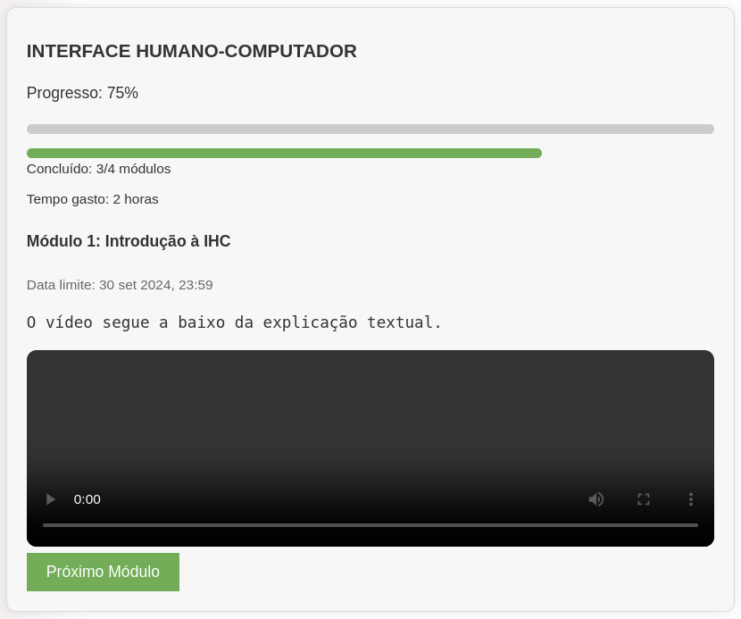

Disciplinas
INTERFACE HUMANO-COMPUTADOR Concluído
Materiais
Neste módulo, você aprendeu sobre como executar um projeto, seguindo as etapas do Design Thinking, e também conheceu algumas diretrizes importantes para criar interfaces de qualidade.
O objetivo desta atividade é permitir que você aplique os princípios do Design Thinking e as diretrizes de interface discutidas em aula para criar um projeto de interface inovador até o estágio de prototipação. Você irá desenvolver suas habilidades de design, pensamento crítico e resolução de problemas, enquanto cria uma proposta de interface que atenda às necessidades dos usuários.
Considere o desafio: como melhorar a experiência de usuário nos sistemas de informação da UFMS?
Para isso, siga estes passos para elaboração e entrega da atividade:
Conteúdo
1) Leia o texto-base do módulo;
2) Escolha um dos sistemas de informação da UFMS, abordados no fórum de discussão deste módulo.
3) Faça a leitura dos pontos de melhoria compartilhados no fórum, para entender as necessidades, desejos e problemas dos usuários em relação à interface desse sistema de informação da UFMS.
4) A partir do que aprendeu no passo anterior, escolha e especifique um problema que irá abordar;
5) Gere no mínimo duas ideias criativas e diferentes para resolver o problema;
6) Crie um protótipo para representar uma ideia de solução. Pode ser um desenho feito à mão ou usando algum software de prototipagem;
7) Elabore um texto, reportando cada passo do seu processo de design;
8) Envie o arquivo em PDF, com todas as informações acima, no espaço da tarefa.
Resolução:
Sistema escolhido 'AVA da UFMS'.
Problema:O sistema não oferece uma maneira clara e visual de acompanhar o progresso nas disciplinas. Sendo que os videos das video aulas deve ser junto a materia o video deve ser embutido facilitando a vida do usuário sem a necessidade de abrir em outra janela e ao concluir uma materia seja possível dar seguimento a proxima materia sem a necessidade de atualizar a pagina
Ideias:Painel de progresso visual:
- Um painel na página principal que mostre o status de cada matéria com barra de progresso e tempo limite.
- Progresso: 75%
- Concluído: 3/4 módulos
- Tempo gasto: 2 horas
- Data limite: 15/03/2023
Notificações:
- A cor da barra mudaria de acordo com o fim do prazo de entrega.
- As video aulas devem ser integradas dentro do conteúdo na própria página.
- Ao terminas uma aula, que seja possível seguir para a próxima sem a necessidade de atualizar a página.
INTERFACE HUMANO-COMPUTADOR
Progresso: 75%
- Concluído: 3/4 módulos
- Tempo gasto: 2 horas
Módulo 1: Introdução à IHC
Data limite: 30 set 2024, 23:59
O vídeo segue a baixo da explicação textual.
Imagem exemplo:
